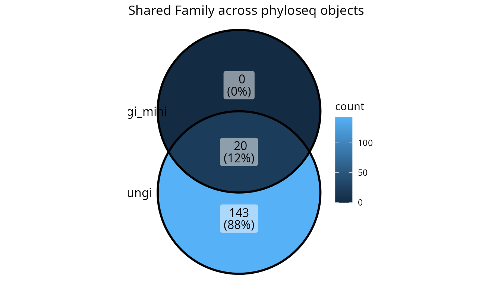
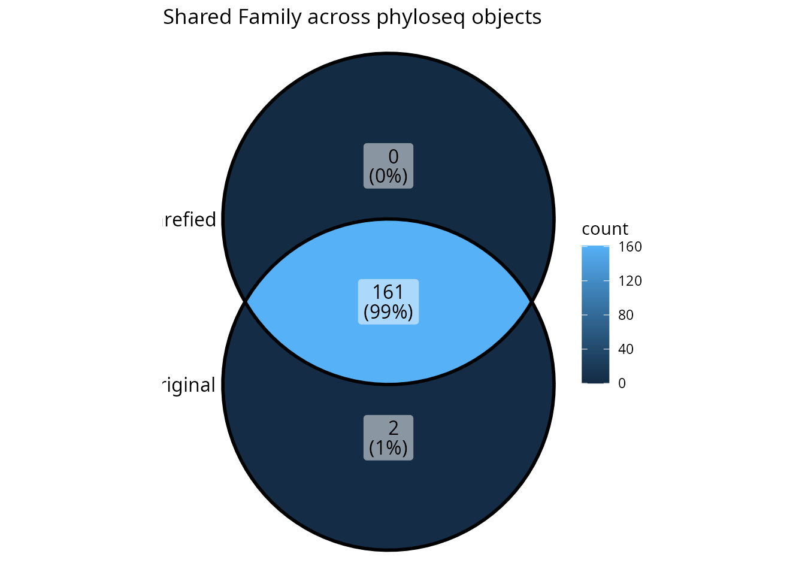

The list_phyloseq Class
Adrien Taudière
2026-03-13
Source:vignettes/list-phyloseq.Rmd
list-phyloseq.RmdIntroduction
The list_phyloseq class is an S7 class designed to store
and compare multiple phyloseq objects. It automatically computes summary
statistics for each phyloseq object and determines the type of
comparison based on:
- Detected characteristics: sample overlap, nested samples, shared modalities
-
User-provided parameters:
same_primer_seq_techandsame_bioinfo_pipeline
This vignette demonstrates:
- How to create
list_phyloseqobjects with the appropriate parameters - The six types of comparisons and when to use them
- Utility functions for manipulating
list_phyloseqobjects - Visualization functions for exploring and presenting results
Creating a list_phyloseq Object
The simplest way to create a list_phyloseq is to pass a
named list of phyloseq objects. You can also specify the
same_primer_seq_tech and same_bioinfo_pipeline
parameters to control the comparison type:
lpq <- list_phyloseq(list(
fungi = data_fungi,
fungi_mini = data_fungi_mini
))
lpq
#> list_phyloseq object with 2 phyloseq objects
#>
#> --- Summary ---
#> # A tibble: 2 × 17
#> name n_samples n_taxa n_sequences n_occurence mean_seq_length min_seq_length
#> <chr> <int> <int> <dbl> <int> <dbl> <int>
#> 1 fungi 185 1420 1839124 12499 318. 251
#> 2 fungi… 137 45 569525 560 343. 303
#> # ℹ 10 more variables: mean_seq_per_sample <dbl>, sd_seq_per_sample <dbl>,
#> # min_seq_per_sample <dbl>, max_seq_per_sample <dbl>,
#> # mean_seq_per_taxon <dbl>, sd_seq_per_taxon <dbl>, has_sam_data <lgl>,
#> # has_tax_table <lgl>, has_refseq <lgl>, has_phy_tree <lgl>
#>
#> --- Comparison characteristics ---
#> Type of comparison: NESTED_ROBUSTNESS
#> Nested samples detected (one phyloseq derived from another).
#> Nesting: fungi_mini (137 samples) is nested in fungi (185 samples)
#> Useful to test robustness to data processing (e.g., rarefaction).
#> Comparisons should focus on the common (nested) samples.
#>
#> Same primer/seq tech: TRUE
#> Same bioinfo pipeline: TRUE
#> Same sample_data structure: TRUE
#> Same samples: FALSE
#> Nested samples: TRUE
#> Same taxa: FALSE
#> Common samples: 137
#> Common taxa: 45
#>
#> --- Reference sequence comparison ---
#> fungi_vs_fungi_mini: 45 shared seqs, 1375 unique in fungi, 0 unique in fungi_miniThe output shows:
- Summary table: Statistics for each phyloseq object (n_samples, n_taxa, n_sequences, etc.)
- Comparison characteristics: Type of comparison, same_primer_seq_tech, same_bioinfo_pipeline, sample overlap, shared modalities
Key Parameters
When creating a list_phyloseq, you can specify:
-
same_primer_seq_tech(logical, default TRUE): Set to FALSE when comparing different primers (e.g., ITS1 vs ITS2) or technologies (e.g., Illumina vs PacBio) -
same_bioinfo_pipeline(logical, default TRUE): Set to FALSE when comparing different clustering methods, taxonomic databases, or analysis parameters
Types of Comparisons
The list_phyloseq class determines the type of
comparison based on detected sample overlap and the user-provided
same_primer_seq_tech and same_bioinfo_pipeline
parameters. There are six main types:
Summary of Comparison Types
|——|————–|———————-|———————–|———-||———-| | REPRODUCIBILITY | Yes | TRUE | TRUE | TRUE | Test reproducibility of identical analysis | | ROBUSTNESS | Yes | TRUE | FALSE | TRUE | Test effect of different pipelines/parameters | | REPLICABILITY | Yes | FALSE | - | TRUE | Test effect of different primers/technologies | | NESTED_ROBUSTNESS | Nested | - | - | TRUE | Test effect of rarefaction/filtering | | EXPLORATION | No | - | - | TRUE | Explore differences between sample groups | | SEPARATE_ANALYSIS | No | - | - | FALSE | Independent analyses (comparison may not be meaningful) |
1. REPRODUCIBILITY
When all phyloseq objects have the same samples, the
same primer/technology
(same_primer_seq_tech = TRUE), and the same
pipeline (same_bioinfo_pipeline = TRUE, both
defaults), the comparison is classified as REPRODUCIBILITY.
# REPRODUCIBILITY: Same samples, same pipeline (default parameters)
# Example: Running the same analysis twice to test reproducibility
lpq_repro <- list_phyloseq(list(
run1 = data_fungi,
run2 = data_fungi
))
cat("Type:", lpq_repro@comparison$type_of_comparison, "\n")
#> Type: REPRODUCIBILITY
cat("Same primer/seq tech:", lpq_repro@comparison$same_primer_seq_tech, "\n")
#> Same primer/seq tech: TRUE
cat("Same bioinfo pipeline:", lpq_repro@comparison$same_bioinfo_pipeline, "\n")
#> Same bioinfo pipeline: TRUEThis can also be useful to test for effect of stochasticity in some function.
# REPRODUCIBILITY: Same samples, same pipeline (default parameters)
# Example: Running the same analysis twice to test reproducibility
lpq_repro <- list_phyloseq(list(
run1 = rarefy_even_depth(data_fungi, rngseed = 66),
run2 = rarefy_even_depth(data_fungi, rngseed = 42)
))
cat("Type:", lpq_repro@comparison$type_of_comparison, "\n")
#> Type: REPRODUCIBILITY
cat("Same primer/seq tech:", lpq_repro@comparison$same_primer_seq_tech, "\n")
#> Same primer/seq tech: TRUE
cat("Same bioinfo pipeline:", lpq_repro@comparison$same_bioinfo_pipeline, "\n")
#> Same bioinfo pipeline: TRUE2. ROBUSTNESS
When all phyloseq objects have the same samples and
the same primer/technology, but different
pipelines (same_bioinfo_pipeline = FALSE), the
comparison is classified as ROBUSTNESS.
# ROBUSTNESS: Same samples, different pipeline
# Example: Comparing different clustering methods or taxonomic databases
lpq_robust <- list_phyloseq(
list(
raw_fungi = data_fungi,
fungi_swarm = postcluster_pq(data_fungi, method = "swarm"),
fungi_mumu = mumu_pq(data_fungi)$new_physeq
),
same_bioinfo_pipeline = FALSE # Different bioinformatics pipelines
)
cat("Type:", lpq_robust@comparison$type_of_comparison, "\n")
#> Type: ROBUSTNESS
cat("Same primer/seq tech:", lpq_robust@comparison$same_primer_seq_tech, "\n")
#> Same primer/seq tech: TRUE
cat("Same bioinfo pipeline:", lpq_robust@comparison$same_bioinfo_pipeline, "\n")
#> Same bioinfo pipeline: FALSE3. REPLICABILITY
When all phyloseq objects have the same samples but
different primers or technologies
(same_primer_seq_tech = FALSE), the comparison is
classified as REPLICABILITY.
# REPLICABILITY: Same samples, different primer/technology
# Example: Comparing ITS1 vs ITS2, or Illumina vs PacBio
lpq_replic <- list_phyloseq(
list(
ITS1 = data_fungi,
ITS2 = data_fungi # In real use, this would be data from a different primer
),
same_primer_seq_tech = FALSE # Different primers/technologies
)
cat("Type:", lpq_replic@comparison$type_of_comparison, "\n")
#> Type: REPLICABILITY
cat("Same primer/seq tech:", lpq_replic@comparison$same_primer_seq_tech, "\n")
#> Same primer/seq tech: FALSE4. NESTED_ROBUSTNESS
When one phyloseq object is derived from another
(e.g., rarefied version), the samples from one are a subset of samples
from another. This type is detected automatically regardless of the
same_primer_seq_tech and same_bioinfo_pipeline
parameters. It is useful for testing robustness to data processing
choices like rarefaction or filtering.
# Create a rarefied version (samples may be lost if they don't meet depth threshold)
set.seed(123)
data_fungi_rarefied <- rarefy_even_depth(data_fungi, sample.size = 1000, verbose = FALSE)
lpq_nested <- list_phyloseq(list(
original = data_fungi,
rarefied = data_fungi_rarefied
))
# Check the comparison type
cat("Type:", lpq_nested@comparison$type_of_comparison, "\n")
#> Type: NESTED_ROBUSTNESS
cat("Nested samples:", lpq_nested@comparison$nested_samples, "\n")
#> Nested samples: TRUE
cat("Nesting structure:", lpq_nested@comparison$nesting_structure, "\n")
#> Nesting structure: rarefied (143 samples) is nested in original (185 samples)The comparison should focus on the common (nested)
samples to make meaningful comparisons. Use
filter_common_lpq() for this (see Utility Functions).
5. EXPLORATION
When phyloseq objects have different samples but shared modalities in sample_data (e.g., same experimental conditions, same sites), the comparison is classified as EXPLORATION. This type is detected automatically based on sample_data.
# Simulate by subsetting samples from different parts of the dataset
# In real use, these would be different sample groups with shared experimental factors
sample_names_fungi <- sample_names(data_fungi)
n_samples <- length(sample_names_fungi)
# Split samples into two groups (simulating different sample sets with shared modalities)
group1_samples <- sample_names_fungi[1:floor(n_samples / 2)]
group2_samples <- sample_names_fungi[(floor(n_samples / 2) + 1):n_samples]
data_group1 <- prune_samples(group1_samples, data_fungi)
data_group2 <- prune_samples(group2_samples, data_fungi)
lpq_exploration <- list_phyloseq(list(
group1 = data_group1,
group2 = data_group2
))
cat("Type:", lpq_exploration@comparison$type_of_comparison, "\n")
#> Type: EXPLORATION
cat("Same samples:", lpq_exploration@comparison$same_samples, "\n")
#> Same samples: FALSE
cat("Common samples:", lpq_exploration@comparison$n_common_samples, "\n")
#> Common samples: 06. SEPARATE_ANALYSIS
When phyloseq objects have different samples with no shared modalities, the comparison is classified as SEPARATE_ANALYSIS. Direct comparison may not be meaningful. Separate analysis of each phyloseq object is recommended.
# Example using completely different datasets
data("enterotype", package = "phyloseq")
lpq_separate <- list_phyloseq(list(
fungi = data_fungi,
enterotype = enterotype
))
cat("Type:", lpq_separate@comparison$type_of_comparison, "\n")
#> Type: SEPARATE_ANALYSIS
cat("Same samples:", lpq_separate@comparison$same_samples, "\n")
#> Same samples: FALSEUtility Functions
Adding and Removing phyloseq Objects
# Start with a single phyloseq
lpq_single <- list_phyloseq(list(fungi = data_fungi))
cat("Initial number of phyloseq objects:", length(lpq_single), "\n")
#> Initial number of phyloseq objects: 1
# Add another phyloseq object
lpq_added <- add_phyloseq(lpq_single, data_fungi_mini, name = "fungi_mini")
cat("After adding:", length(lpq_added), "\n")
#> After adding: 2
cat("Names:", paste(names(lpq_added), collapse = ", "), "\n")
#> Names: fungi, fungi_mini
# Remove a phyloseq object
lpq_removed <- remove_phyloseq(lpq_added, "fungi_mini")
cat("After removing:", length(lpq_removed), "\n")
#> After removing: 1Updating Summary and Comparison
If you modify the phyloseq objects inside the list_phyloseq, use
update_list_phyloseq() to recompute the summary table and
comparison characteristics. You can also use this function to change the
same_primer_seq_tech or same_bioinfo_pipeline
parameters:
lpq@phyloseq_list[[1]] <- rarefy_even_depth(lpq@phyloseq_list[[1]])
lpq_updated <- update_list_phyloseq(lpq)
# Change the comparison type by modifying parameters
lpq_robustness <- update_list_phyloseq(lpq, same_bioinfo_pipeline = FALSE)
cat("New type:", lpq_robustness@comparison$type_of_comparison, "\n")Filtering to Common Samples and Taxa
The filter_common_lpq() function filters each phyloseq
object to retain only samples and/or taxa that are common across all
objects. This is particularly useful for:
- NESTED_ROBUSTNESS comparisons: filter to common samples when comparing original vs rarefied
- Any comparison where you need all phyloseq objects to have the same samples/taxa
# Create a list_phyloseq with nested samples
set.seed(123)
lpq_to_filter <- list_phyloseq(list(
original = data_fungi,
rarefied = rarefy_even_depth(data_fungi, sample.size = 1000, verbose = FALSE)
))
# Before filtering
cat("Before filtering:\n")
#> Before filtering:
cat(" Original samples:", nsamples(lpq_to_filter[["original"]]), "\n")
#> Original samples: 185
cat(" Rarefied samples:", nsamples(lpq_to_filter[["rarefied"]]), "\n")
#> Rarefied samples: 143
cat(" Common samples:", lpq_to_filter@comparison$n_common_samples, "\n")
#> Common samples: 143
# Filter to keep only common samples
lpq_filtered <- filter_common_lpq(lpq_to_filter,
filter_samples = TRUE,
filter_taxa = FALSE,
verbose = TRUE
)
# After filtering - both have the same samples
cat("\nAfter filtering:\n")
#>
#> After filtering:
cat(" Original samples:", nsamples(lpq_filtered[["original"]]), "\n")
#> Original samples: 143
cat(" Rarefied samples:", nsamples(lpq_filtered[["rarefied"]]), "\n")
#> Rarefied samples: 143
cat(" Same samples now:", lpq_filtered@comparison$same_samples, "\n")
#> Same samples now: TRUEYou can also filter to common taxa:
# Filter both samples and taxa
lpq_filtered_both <- filter_common_lpq(lpq_to_filter,
filter_samples = TRUE,
filter_taxa = TRUE
)Viewing Shared Modalities
The shared_mod_lpq() function displays which sample_data
variable modalities are shared across phyloseq objects:
shared_mod_lpq(lpq)
#> # A tibble: 5 × 3
#> Variable N_shared Shared_modalities
#> <chr> <int> <chr>
#> 1 X 137 A10-005-B_S188_MERGED.fastq.gz, A10-005-H_S189_MERGED.f…
#> 2 Sample_names 137 A10-005-B_S188, A10-005-H_S189, A10-005-M_S190, A12-007…
#> 3 Tree_name 100 A10-005, A12-007, A15-004, A8-005, AB29-abm-X, AC27-013…
#> 4 Height 4 Low, High, Middle, NA
#> 5 Diameter 70 52, 28,4, 30,7, 32,8, 33,3, 99, 32, 55,4, 115,5, -, 10,…This is useful for understanding what factors are common across your datasets, especially for EXPLORATION type comparisons.
Visualization Functions
formattable_lpq: Summary Table Visualization
The formattable_lpq() function creates a beautiful HTML
table showing the summary statistics with colored bars and
indicators:
# Basic formattable visualization
formattable_lpq(lpq)
# Custom columns selection
formattable_lpq(lpq, columns = c("name", "n_samples", "n_taxa", "n_sequences"))
# Custom colors for bars
formattable_lpq(lpq, bar_colors = list(
n_samples = "steelblue",
n_taxa = "darkgreen"
))For a more complete view including comparison characteristics:
# Get both summary and comparison tables
result <- formattable_lpq_full(lpq)
result$summary
result$comparisonupset_lpq: Set Intersection Visualization
The upset_lpq() function creates UpSet plots or Venn
diagrams showing shared taxonomic values across phyloseq objects:
# Create a list_phyloseq with multiple objects
lpq_multi <- list_phyloseq(list(
fungi = data_fungi,
fungi_mini = data_fungi_mini
))
# Venn diagram (automatically chosen for ≤4 sets)
upset_lpq(lpq_multi, tax_rank = "Family")
# Force UpSet plot (better for more than 4 sets or complex intersections)
data("enterotype", package = "phyloseq")
lpq_many <- list_phyloseq(list(
fungi = data_fungi,
fungi_mini = data_fungi_mini,
fungi_rarefied = rarefy_even_depth(data_fungi, sample.size = 1000, verbose = FALSE),
enterotype = enterotype
))
upset_lpq(lpq_many, tax_rank = "Genus", plot_type = "upset")Subsetting and Accessing Elements
The list_phyloseq class supports standard R subsetting
operations:
# Get the number of phyloseq objects
length(lpq)
#> [1] 2
# Get names
names(lpq)
#> [1] "fungi" "fungi_mini"
# Extract a single phyloseq object
pq1 <- lpq[["fungi"]]
cat("Extracted phyloseq has", ntaxa(pq1), "taxa\n")
#> Extracted phyloseq has 1420 taxa
# Subset to create a new list_phyloseq with fewer objects
lpq_subset <- lpq[1] # Returns a new list_phyloseq with only the first objectWorkflow Example: Comparing Rarefaction Effect
Here’s a complete workflow for comparing the effect of rarefaction on your data:
# Step 1: Create original and rarefied versions
set.seed(42)
original <- data_fungi
rarefied <- rarefy_even_depth(data_fungi, sample.size = 1000, verbose = FALSE)
# Step 2: Create list_phyloseq
lpq_rarefaction <- list_phyloseq(list(
original = original,
rarefied = rarefied
))
# Step 3: Check the comparison type
print(lpq_rarefaction)
#> list_phyloseq object with 2 phyloseq objects
#>
#> --- Summary ---
#> # A tibble: 2 × 17
#> name n_samples n_taxa n_sequences n_occurence mean_seq_length min_seq_length
#> <chr> <int> <int> <dbl> <int> <dbl> <int>
#> 1 origi… 185 1420 1839124 12499 318. 251
#> 2 raref… 143 1397 143000 5900 318. 251
#> # ℹ 10 more variables: mean_seq_per_sample <dbl>, sd_seq_per_sample <dbl>,
#> # min_seq_per_sample <dbl>, max_seq_per_sample <dbl>,
#> # mean_seq_per_taxon <dbl>, sd_seq_per_taxon <dbl>, has_sam_data <lgl>,
#> # has_tax_table <lgl>, has_refseq <lgl>, has_phy_tree <lgl>
#>
#> --- Comparison characteristics ---
#> Type of comparison: NESTED_ROBUSTNESS
#> Nested samples detected (one phyloseq derived from another).
#> Nesting: rarefied (143 samples) is nested in original (185 samples)
#> Useful to test robustness to data processing (e.g., rarefaction).
#> Comparisons should focus on the common (nested) samples.
#>
#> Same primer/seq tech: TRUE
#> Same bioinfo pipeline: TRUE
#> Same sample_data structure: TRUE
#> Same samples: FALSE
#> Nested samples: TRUE
#> Same taxa: FALSE
#> Common samples: 143
#> Common taxa: 1397
#>
#> --- Reference sequence comparison ---
#> original_vs_rarefied: 1397 shared seqs, 23 unique in original, 0 unique in rarefied
# Step 4: Filter to common samples for fair comparison
lpq_common <- filter_common_lpq(lpq_rarefaction,
filter_samples = TRUE,
verbose = TRUE
)
# Step 5: Visualize shared taxa at different ranks
upset_lpq(lpq_common, tax_rank = "Family")
# Step 6: View the formatted summary
formattable_lpq(lpq_common)Summary
The list_phyloseq class provides a powerful framework
for comparing multiple phyloseq objects:
-
Precise comparison type determined by
same_primer_seq_techandsame_bioinfo_pipelineparameters combined with automatic detection of sample overlap - Summary statistics computed for each phyloseq object
- Utility functions for adding, removing, filtering, and updating
- Visualization functions for exploring differences (formattable tables, UpSet/Venn plots)
Key points:
- Set
same_bioinfo_pipeline = FALSEfor ROBUSTNESS comparisons (different pipelines) - Set
same_primer_seq_tech = FALSEfor REPLICABILITY comparisons (different primers/technologies) - NESTED_ROBUSTNESS, EXPLORATION, and SEPARATE_ANALYSIS are detected automatically
- For NESTED_ROBUSTNESS comparisons, use
filter_common_lpq()to focus on common samples - The
upset_lpq()function is excellent for visualizing shared taxonomic composition - Use
update_list_phyloseq()to change parameters or recompute after modifications
Getting Help
-
Function documentation: Use
?function_namefor detailed help - Package website: https://adrientaudiere.github.io/comparpq/
- Report issues: https://github.com/adrientaudiere/comparpq/issues